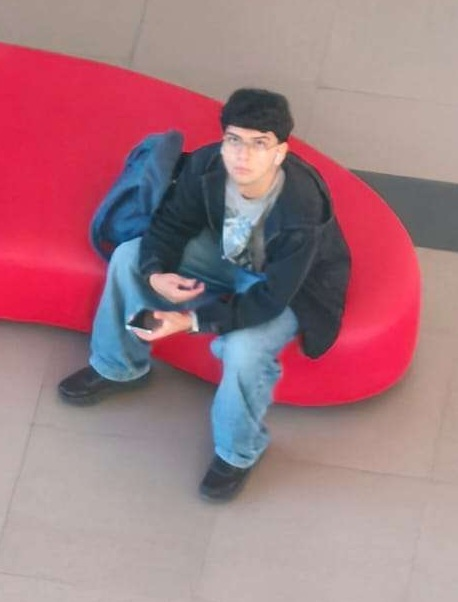
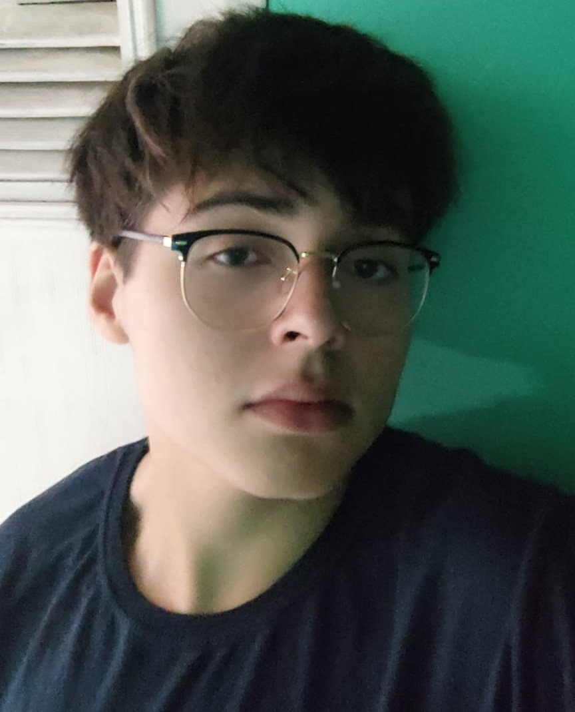
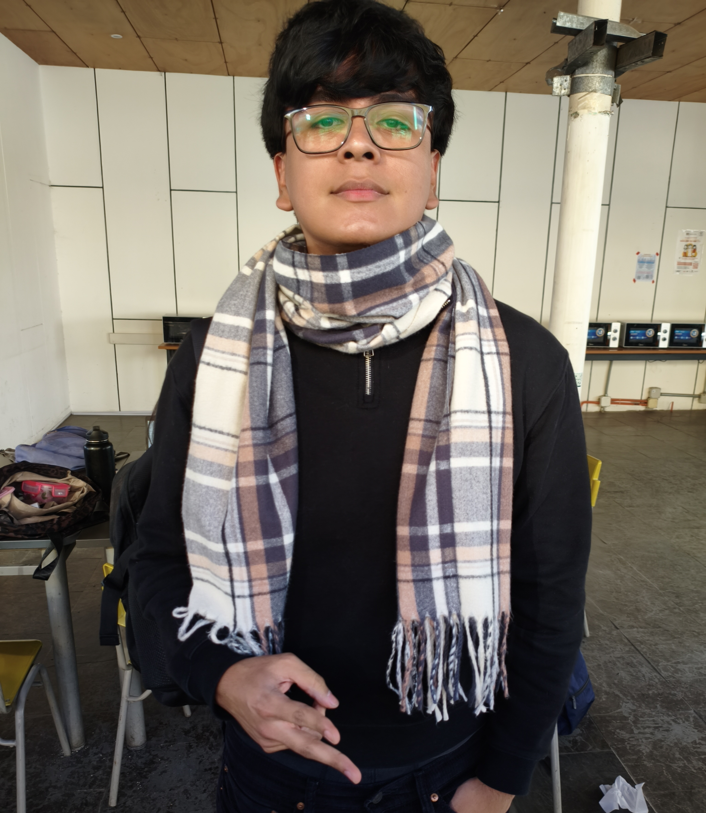
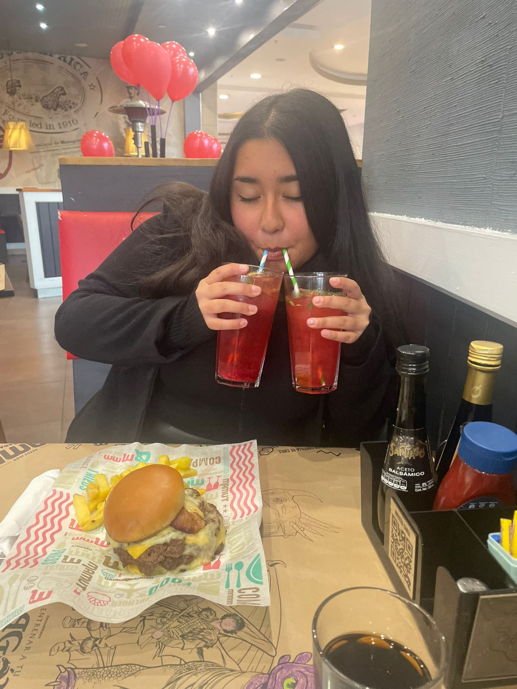
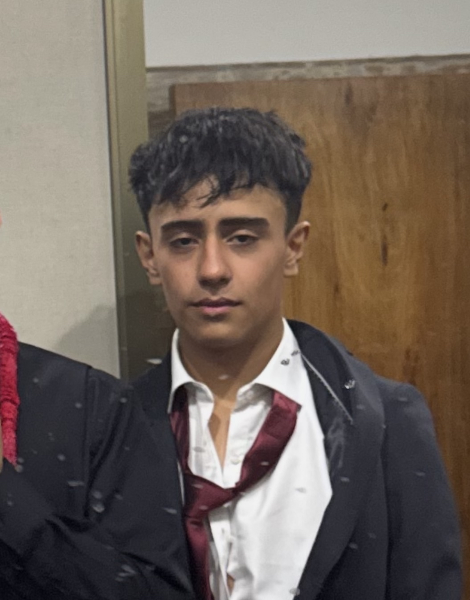
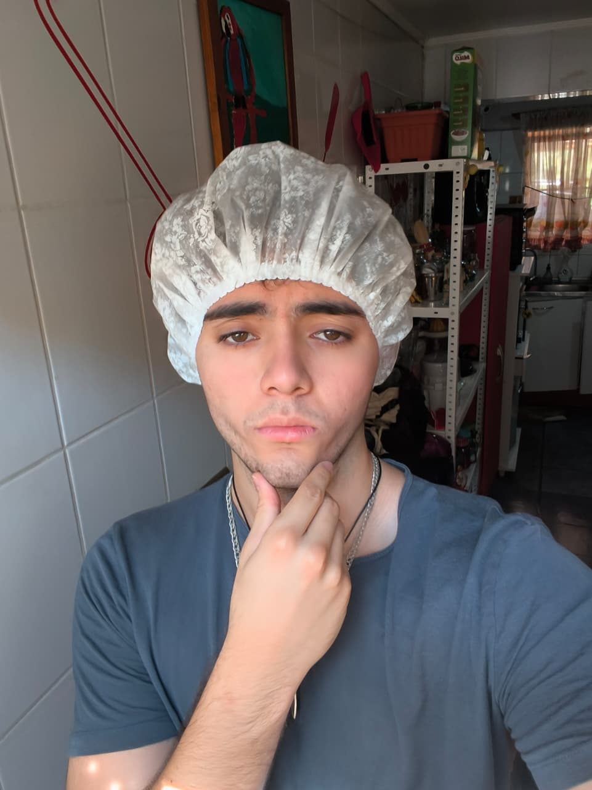
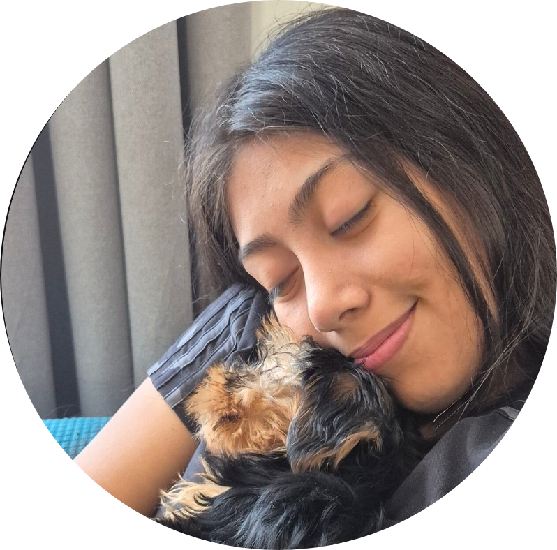
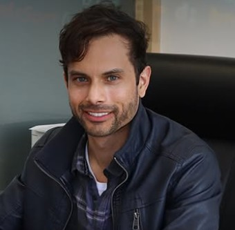
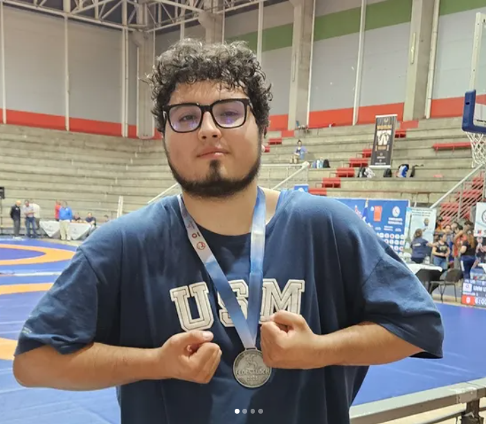

Desarrollo tecnológico
Javier Martínez y Benjamin Flores
Hardware, sensores y programación del bastón.Somos un equipo de estudiantes que desarrolla Vision Stick como una propuesta tecnológica inclusiva, combinando investigación, diseño, programación, documentación y trabajo colaborativo.
Javier Martínez y Benjamin Flores
Hardware, sensores y programación del bastón.Valentina Santibáñez y Gaspar Jorquera
Búsqueda de información, justificación y análisis del problema.Fernanda Silva y Bastian Araya
Documentación, página web, registro visual y redes sociales.Felipe Fernández y Benjamin Pérez
Resolución de problemas, pruebas y apoyo en tareas del equipo.Haz clic en un integrante para ver más información sobre quienes somos 🔥.

Diseño, documentación y difusión

Desarrollo tecnológico

Apoyo general

Apoyo general

Diseño, documentación y difusión

Desarrollo tecnológico

Investigación y análisis

Investigación y análisis
Estas personas han sido y son fundamentales en el desarrollo de Vision Stick, brindándonos orientación, apoyo técnico y acompañamiento durante las distintas etapas del proyecto.

Profesor Guía
Apoya el desarrollo general del proyecto, entregando orientación técnica y supervisando el avance del equipo.

Ayudante del Proyecto
Colabora en la organización, revisión de avances y apoyo en áreas técnicas relacionadas con el proyecto y muy buena persona.